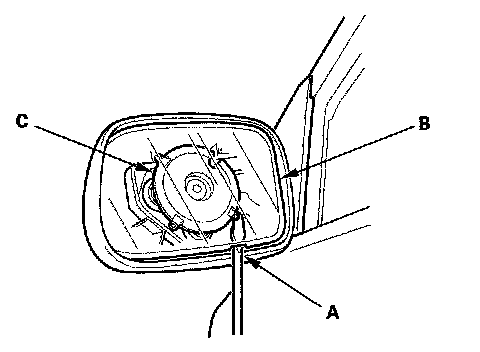
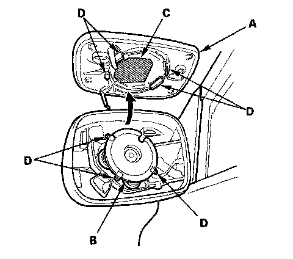
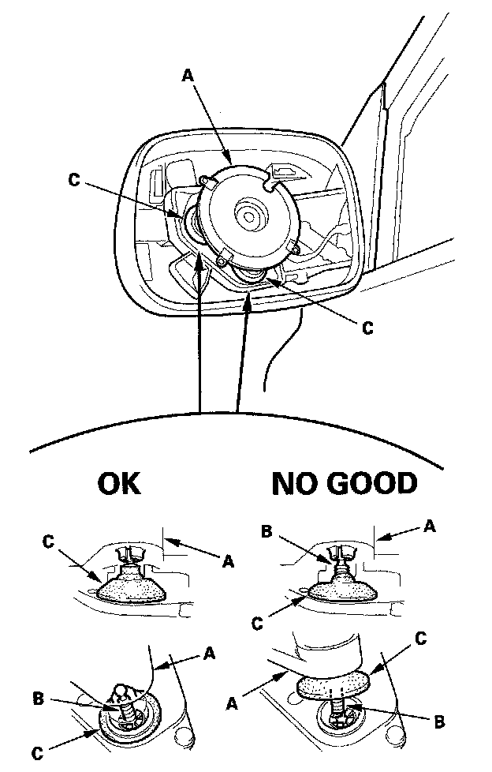
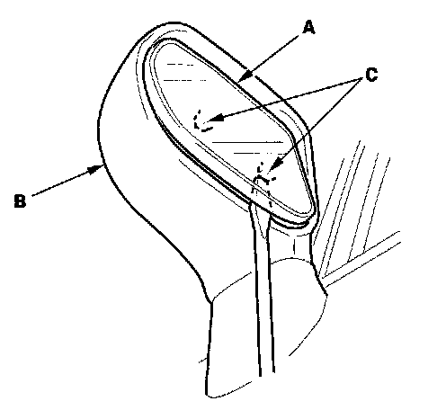
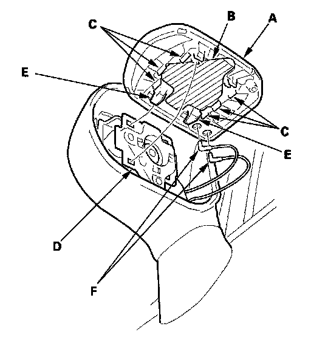
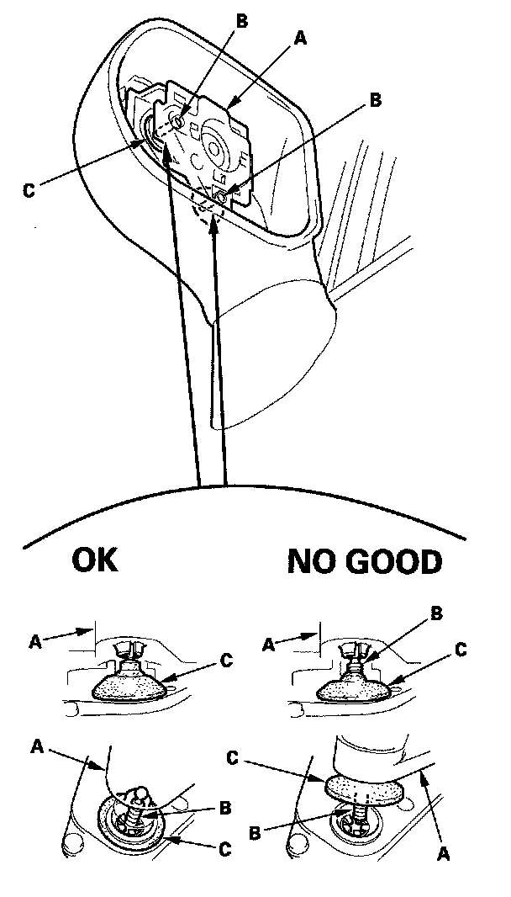

Mirror Holder Replacement
Mirror Holder Replacement2-door
NOTE: When prying with a flat-tipped screwdriver, wrap it with protective tape to prevent damage.
1. Adjust the mirror fully to the inward position.

2. Insert a long, thin flat-tipped screwdriver along the notch (A) on the mirror holder (B). Slide the tip of the screwdriver between the mirror holder and the actuator (C).
3. Quickly twist the screwdriver to separate the mirror holder from the mirror actuator.
4. Insert the screwdriver further under the mirror holder and twist it again.
NOTE: Do not pry upon the mirror holder to separate the two parts, as this can cause either the mirror glass or actuator to break.

5. Separate the mirror holder (A) from the actuator (B) by slowly pulling the mirror apart while separating the adhesive (C), and release the hooks (D). If equipped, disconnect the mirror defogger connectors from the heater pad terminals.

6. Before reinstalling the mirror holder to the inner holder (A) of the actuator, check the actuator rods (B) and the actuator boots (C):
- If each rod is off the actuator hole, insert it securely.
- The whole of each rod should be covered with the boot. If not, adjust the boot into proper position.
7. If equipped, reconnect the mirror defogger connectors.
8. Reattach the hooks of the mirror holder to the actuator, then position the mirror holder on the actuator. Carefully push on the clip portions of the mirror holder until the mirror holder locks into place.
9. Check the actuator operation.
4-door
NOTE: Put on gloves to protect your hands.

1. Carefully push on the top edge of the mirror holder (A) by hand.
2. Put a shop towel in the opening between the lower edge of the mirror holder and the mirror housing (B) to prevent scratches, and detach the bottom clips (C) with a flat-tip screwdriver wrapped with protective tape.

3. Carefully pull out the bottom edge of the mirror holder (A) to separate the adhesive (B), and then release the side clips (C).
4. Separate the mirror holder from the actuator (D) by releasing the hooks (E). If equipped, disconnect the mirror defogger connectors (F).

5. Before reinstalling the mirror holder to the inner holder (A) of the actuator, check the actuator rods (B) and the actuator boots (C):
- If each rod is off the actuator hole, insert it securely.
- Each rod should be covered with a boot. If not, adjust the boot into the proper position.
6. If equipped, reconnect the mirror defogger connectors.
7. Reattach the hooks of the mirror holder to the actuator, then position the mirror holder on the actuator. Carefully push on the clip portions of the mirror holder until the mirror holder locks into place.
8. Check the actuator operation.